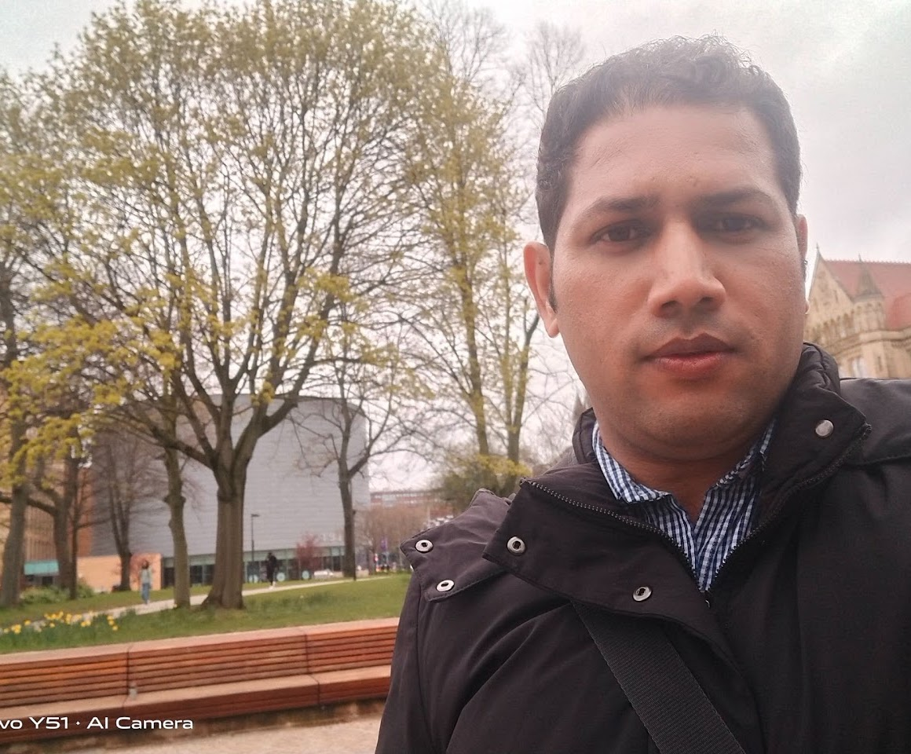

Vessel Spatial Analysis (VeSpA): A Tool for Whole Slide Image Segmentation, Morphometry, and QuPath Extension
Preprint — DOI: 10.64898/2026.06.15.732366
View preprintPostdoctoral Researcher in Computational Pathology · Humanitas Research Hospital (IRCCS), Milan
Computational chemist and bioinformatician with a strong foundation in molecular modelling and virtual screening — structure-based and ligand-based approaches, docking, and hit identification. Currently applying computational imaging analysis to digital pathology: processing Imaging Mass Cytometry (IMC) and spatial omics data to map the tumour microenvironment and extract spatially resolved biomarkers. Experienced in machine learning and multi-omics integration (RNA-seq, ATAC-seq, scRNA-seq) and in building reproducible, AI-driven computational pipelines in Python, R, and Bash.

A multidisciplinary toolkit spanning computational biology, cheminformatics, machine learning, and data science.
Over a decade of research spanning computational drug discovery, bioinformatics, and AI — across academia and industry.
12+ peer-reviewed publications and preprints in computational biology, drug discovery, bioinformatics, and AI.
Preprint — DOI: 10.64898/2026.06.15.732366
View preprintInternational Journal of Molecular Sciences, 25(4), 2002
DOI: 10.3390/ijms25042002RSC Advances, 13(43), 30052–30070
DOI: 10.1039/D3RA04622BPure and Applied Chemistry
DOI: 10.1515/pac-2021-1104Journal of Computational Biophysics and Chemistry, 20(6), 631–639
Read full articleLab-in-Silico, 1(2), 49–58
DOI: 10.22034/lins20012050Scientific Reports — Nature, 9(1), 1–14
DOI: 10.1038/s41598-019-47724-1Open-source tools and research software at the intersection of bioinformatics, cheminformatics, and machine learning.
Interactive graphical interface for virtual screening and hit selection, running on Windows, Mac, and Linux. Covers receptor preparation, compound library prep, virtual screening, results visualization and filtering. Published in Int. J. Mol. Sci. (2025).
AI agent built with Google's Agent Development Kit (ADK) for structure-based virtual screening — implements real Lipinski filtering and AutoDock Vina docking, adapted from VSpipe-GUI. Developed as a Kaggle 5-Day AI Agents capstone (Agents for Good).
Vessel Spatial Analysis toolkit for imaging mass cytometry (IMC) data — developed at the Computational Pathology Lab, Humanitas Research Hospital, for spatial analysis of the tumor vasculature.
View RepositoryNextflow pipeline for automated, reproducible processing of imaging mass cytometry (IMC) data, from raw acquisition through to analysis-ready outputs. Built at the Computational Pathology Lab, Humanitas Research Hospital.
View RepositoryEnd-to-end workflow for imaging mass cytometry analysis — covering segmentation, cell phenotyping, and spatial statistics for multiplexed tissue imaging. Developed at the Computational Pathology Lab, Humanitas Research Hospital.
View RepositoryML-based QSAR web application predicting bioactivity against Receptor Tyrosine Kinase using ChEMBL data. Built with Scikit-learn, RDKit fingerprints, and Streamlit for interactive deployment. Co-developed with Yasir Waheed.
Python-based graphical interface for macromolecular simulations on GROMACS — automates preparation, solvation, ionization, energy minimization, and full MD simulation runs. Co-developed with Yasir Waheed.
A comprehensive MATLAB toolbox for proteoform identification from top-down proteomics data — statistical profiling, peptide analysis, and visualization. Published in Scientific Reports (Nature, 2019).
QSAR model and Streamlit web application for predicting inhibitor potency against SARS-CoV-2 Replicase Polyprotein. Uses PubChem fingerprints and Random Forest for end-to-end bioactivity (pIC50) prediction.
Collection of PyMOL scripts for structural analysis, visualisation, and automation — covering protein structure inspection, binding site analysis, and publication-quality molecular rendering.
Teaching, training, certifications, memberships, and contributions to the scientific community.
Active on Kaggle with 5 badges. Completed the 5-Day AI Agents Intensive with Google (2025), producing a capstone agent (VSpipe-Agent) integrating AutoDock Vina with ADK for virtual screening. 1 published writeup.
View Kaggle ProfileOpen-access video tutorial series on computational biology tools — aimed at making these techniques accessible to early-career researchers.
 2 videos
2 videos
Hands-on webinar covering Mendeley setup through inserting and managing references and bibliography in theses and manuscripts.
Watch Series 6 videos
6 videos
Step-by-step 5-part series on protein homology modeling using MODELLER — from sequence alignment to final model validation.
Watch Series 11 videos
11 videos
Comprehensive 10-part series on computer-aided drug design and molecular docking using AutoDock Tools — from installation to results analysis.
Watch Series